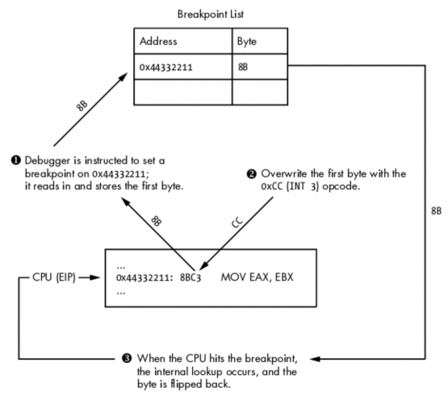
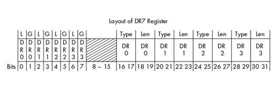
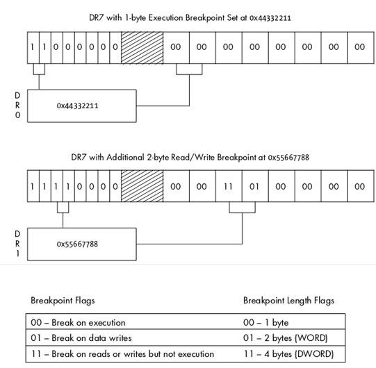
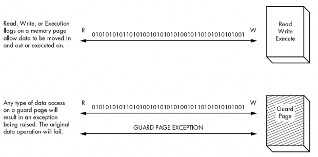

2.4 断点
当我们需要让被调试程序暂停的时候就需要用到断点。通过暂停进程，我们能观察 变量，堆栈参数以及内存数据，并且记录他们。断点有非常多的好处，当你调试进程的时候 这些功能会让你觉得很舒爽。断点主要分成三种：软件断点，硬件断点，内存断点。他们有 非常相似的工作方式，但实现的手段却各不相同。
2.4.1 软件断点
软件断点具体而言就是在 CPU 执行到特定位置的代码的时候使其暂停。软件断点 将会使你在调试过程中用的最多的断点。软件断点的本质就是一个单字节的指令，用于暂停 被执行程序，并将控制权转移给调试器的断点处理函数。在搞明白它是如何工作之前你必须 先弄清楚在 x86 汇编里指令和操作码的差别。
汇编指令是 CPU 执行的命令的高级表示方法。举个例子：
MOV EAX, EBX
这个指令告诉 CPU 把存储在 EBX 寄存器里的东西放到 EAX 寄存器里。相当简单，不 是吗？然而 CPU 根本不明白刚才的指令，它必须被转化成一种叫做操作码的东西。操作码（opcode）就是 operation code,是 CPU 能理解并执行的语言。前面的汇编指令转化成操作码 就是下面这样：
8BC3
如你说见，幕后正在进行的操作相当的令人困惑，但这确实是 CPU 的语言。你可 以把汇编指令想象成 CPU 们的 DNS（一种解析域名和 IP 的网络服务）。你不用再一个个的 记忆复杂难懂的操作码（类似 IP 地址），取而代之的是简单的汇编的指令，最后这些指令都 会被汇编器转换成操作码。在日常的调试中你很少会用到操作码，但是他们对于理解软件断 点的用途非常重要。
如果我们先前讲解的指令发生在 0x4433221 这个地址，一般是这样显示的：
0x44332211: 8BC3 MOV EAX, EBX
这里显示了地址，操作码，和高级的汇编指令。为了在这个地址设置断点，暂停 CPU， 我们将从 2 个字节的 8BC3 操作码中换出一个单字节的操作码。这个单字节的操作码也就 是 3 号中断指令（INT 3），一条能让 CPU 暂停的指令。3 号中断转换成操作码就是 0xCC。 这里是设置断点前和设置断点后的对比：
在断点被设置前的操作码
0x44332211: 8BC3 MOV EAX, EBX
断点被设置后的操作码
0x44332211: CCC3 MOV EAX, EBX
很明显原操作码中的 8B 被替换成了 CC。当 CPU 执行到这个操作码的时候，CPU 暂停， 并触发一个 INT3(3 号中断)事件。调试器自身能处理这个事件，但是为了设计我们自己的调 试器，明白调试器是如何具体操作的很重要。当调试器被告知在目标地址设置一个断点，它 首先读取目标地址的第一个字节的操作码，然后保存起来，同时把地址存储在内部的中断列 表中。接着，调试器把一个字节操作码 CC 写入刚才的地址。当 CPU 执行到 CC 操作码的 时候就会触发一个 INT3 中断事件，此时调试器就能捕捉到这个事件。调试器继续判断这个 发生中断事件的地址(通过 EIP 指针，指令指针)是不是自己先前设置断点的地址。如果在调 试器内部的断点列表中找到了这个地址，就将设置断点前存储起来的操作码写回到目标地 址，这样进程被调试器恢复后就能正常的执行。图 2-3 对此进行了详细的描绘。

图 2-3:软件断点的处理过程
有两种类型的软件断点可以被设置：一次性断点和持续性断点。一次性断点意味着，一 旦断点被触发（命中）一次，它就会从内部中断列表清除掉。一个持久性断点在 CPU 触发 后会重新存储在内部的断点列表里，以后每次运行到这里还会中断。
然而软件断点有一个问题：当你改变了被调试程序的内存数据的时候，你同时改变了运 行时的软件的循环冗余码校验合（CRC）。CRC 是一种校验数据是否被改变的函数，它被广 泛的应用于文件，内存，文本，网络数据包和任何你想监视数据改变的地方。 CRC 将一定 范围内的数据进行 hash（散列）计算，在逆向工程中一般是对进程的内存数据进行运算， 然后将 hash 值和此前原始的 hash 值进行比较，以判断数据是否被改变。如果不同说明数据 被改动了，校验失败。这点很重要，因为病毒程序经常检测程序在内存中运行的代码的 CRC 值是否相同，不同说明数据被修改，则自动杀死自己。为了在这种特殊的情况下也能正常的 进行调试工作，就要使用硬件断点了。
2.4.2 硬件断点
硬件断点非常有用，尤其是当想在一小块区域内设置断点，但是又不能修改它们的时候。
这种类型的断点被设置在 CPU 级别，并用特定的寄存器：调试寄存器。一个 CPU 一般会有 8 个调试寄存器（DR0 寄存器到 DR7 寄存器），它们被用于管理硬件断点。调试寄存器 DR0 到调试寄存器 DR3 存储硬件断点地址。这意味着你同一时间内最多只能有 4 个硬件断点。 DR4 和 DR5 保留。DR6 是状态寄存器，说明了被断点触发的调试事件的类型。DR7 本质上 是一个硬件断点的开关寄存器，同时也存储了断点的不同类型。通过在 DR7 寄存器里设置 不同标志，能够创建以下几种断点：
当特定的地址上有指令执行的时候中断
当特定的地址上有数据可以写入的时候
当特定的地址上有数据读或者写但不执行的时候 这非常有用，当你要设置特定的断点（至多 4 个），又不能修改运行的进程的时候。
图 2-4 显示了与硬件断点的状态，长度和地址相关的字段。


图 2-4:DR7 寄存器决定了断点的类型
0-7 位是硬件断点的激活与关闭开关。在这七位中 L 和 G 字段是局部和全局作用域的 标志。我把两个位都设置了，以我的经验用户模式的调试中只设置一个就能工作。 8-25 位 在我们一般的调试中用不到，在 x86 的手册上你可以找到关于这些字节的详细解释。16-31 位决定了设置在 4 个断点寄存器中硬件断点的类型与长度。
和软件断点不同，硬件断点不是用 INT3 中断，而是用 INT1(1 号中断).INT1 负责硬件 中断和步进事件。步进（ Single-step ）意味着一步一步的执行指令，从而精确的观察关键 代码以便监视数据的变化。在 CPU 每次执行代码之前，都会先确认当前将执行的代码的地 址是否是硬件断点的地址，同时也要确认是否有代码要访问被设置了硬件断点的内存区域。 如果任何储存在 DR0-DR3 中的地址所指向的区域被访问了，就会触发 INT1 中断，同时暂 停 CPU。如果没有，CPU 执行代码，到下一行代码时，CPU 继续重复上面的检查。
硬件断点极其有用，但是也有一些限制。一方面你同一时间只能设置四个断点，另 一方面断点起作用的区域只有 4 个字节（也就是检测 4 个字节的内存数据改变）。如果你想 跟踪一大块内存数据，就办不到了。为了解决这个问题，你就要用到内存断点。
2.4.3 内存断点
内存断点其实不是真正的断点。当一个调试器设置了一个内存断点的时候，它其实是 改变了内存中某个块或者页的权限。一个内存页是操作系统处理的最小的内存单位。一个内 存页被申请成功以后，就拥有了一个权限集，它决定了内存该如何被访问。下面是一些内存 页的访问权限的例子：
- 可执行页 允许执行但不允许读或写，否则抛出访问异常
- 可读页 只允许从页面中读取数据，其余的则抛出访问异常
- 可写页 允许将数据写入页面
任何对保护页的访问都会引发异常，之后页面恢复访问前的状态
大多数系统允许你综合这些权限。举个例子，你能有在内存中创建一个页面，既能 读又能写，同时另一个页面既能读又能执行。每一个操作系统都有内建的函数让你查询当前 内存页（并不是所有的）的权限，并且修改它们。参考图 2-5 观察不同权限的内存页面数据 是如何访问的。

图 2-5: 各种不同权限的内存页 这里我们感兴趣的是保护页(Guard Page) 。这种类型的页面常被用于：分离堆和栈或者
确保一部分内存数据不会增长出边界。另一种情况，就是当一个特定的内存块被进程命中（访 问）了，就暂停进程。举个例子，如果我们在逆向一个网络服务程序，在其接收到网络数据 包以后，我们在存储数据包的内存上设置保护页，接着运行程序，一旦有任何对保护页的访 问，都会使 CPU 暂停，抛出一个保护页调试异常，这时候我们就能确定程序是在什么时候 用什么方式访问接收到的数据了。之后再进一步跟踪观察访问内存的指令，继而确定程序对数据做了什么操作。这种断点同时也解决了软件断点数据更新的问题，因为我们没有修改任 何运行着的代码。
到目前为止，我们已经讲解完了调试器的基础知识和工作原理，接下来我们要亲自动手 写一个 Python 调试器，这个基于 Windows 的轻量级调试器，将会用到我们目前学到的所有 知识。